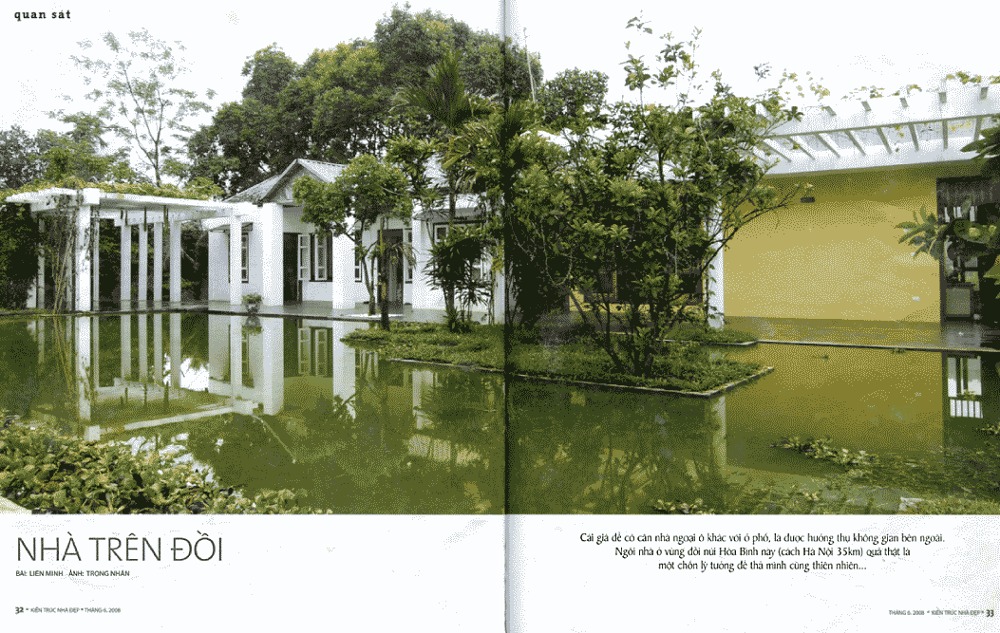
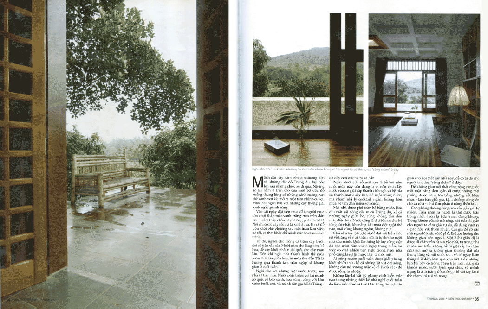
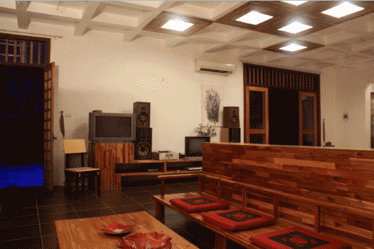
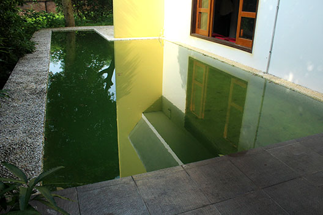
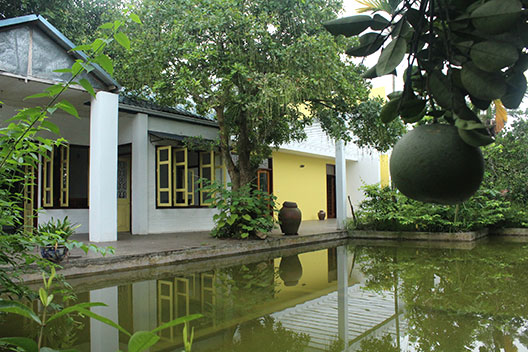
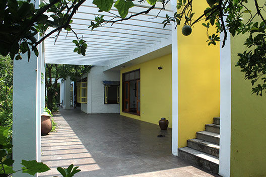
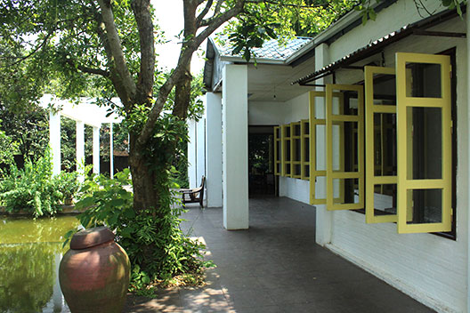

Your Home
in Xuan Mai

Getting there
Traveling to Xuan Mai has become a lot easier since the BRT bus line has a dedicated traffic lane out of Hanoi to Ha Dong, and it will be even faster when the city’s first overhead train line follows the same route.
From Ha Dong it’s just another 30’ bus ride to the center of Xuan Mai, population 27,000. Get offin front of the city’s large market, a good place to shop for fresh vegetables and whatever else you’d like to pick up on the way to your home, just 3km away. Both buses depart every 15’.
In one of the cabs waiting at the market you’ll pass over town streets to an asphalt road that first takes you through the wide-open spaces of a military base where the army’s medical staff are trained, and then to a lush area of hills and valleys where the Hmong have dwelled from centuries past until today. It is here that about 20 Hanoi families have made their homes.
Arriving at a walled gate, you are home.
The grounds
The scale of your walled 3600m2 grounds is not obvious as you first enter the property. What strikes you first are the many flowering pomelo trees that seasonally provide you with fruit and flagrance.
Your house is only partially visible through the foliage, framed by a large pond in front with a trellis of flowering vines and in back, two 200 year old cây Sấushade trees, plus many fruit trees such as Mango, Hồng xiêm and Mangrove. Beyond the house your land drops to fertile valley farmland before rising in the near distance to rolling hill tops. It is a special, very personal place, not visible from adjoining properties.
This proximity with nature and the rich, mature plantings are one of the joys of this unique property, generously giv-ing you an ever-changing experience as the seasons pass one to another.

Your home
Your 150m2 dwelling is composed of two structures. On the right is a contemporary house with walk-through win-dowed passageways in front and back, an open plan of custom, built-in wooden furniture inside, a spacious sleeping platform and a bathing area with a modern Jacuzzi shower-tub. The back of the house opens to a 6.7m-long swim-ming pool. A uniquely designed concrete roof makes this house a cool haven in the summer months. Designed by architect [Name,] the house was featured on the cover and six interior pages of the [month] 2006 issue of Nha Dep magazine.
Only a meter apart is an older brick dwelling toped with a ceramic-tile roof. Inside are two bedrooms, a fireplace and kitchen. This is a sturdy, sound building that can with some repair be either a perfect space for the rustic living it was originally intended for, or a blank canvas upon which to paint the kitchen of your dreams and more. It was once the home of a caretaker who tended the land, raised livestock and served the owner.
Both houses have recently been refurbished. This is a rare opportunity to become owners of a remarkable property at a very affordable cost.

Nhadep Magazine
 
Gallery
- 


- 
- 

- 
- 